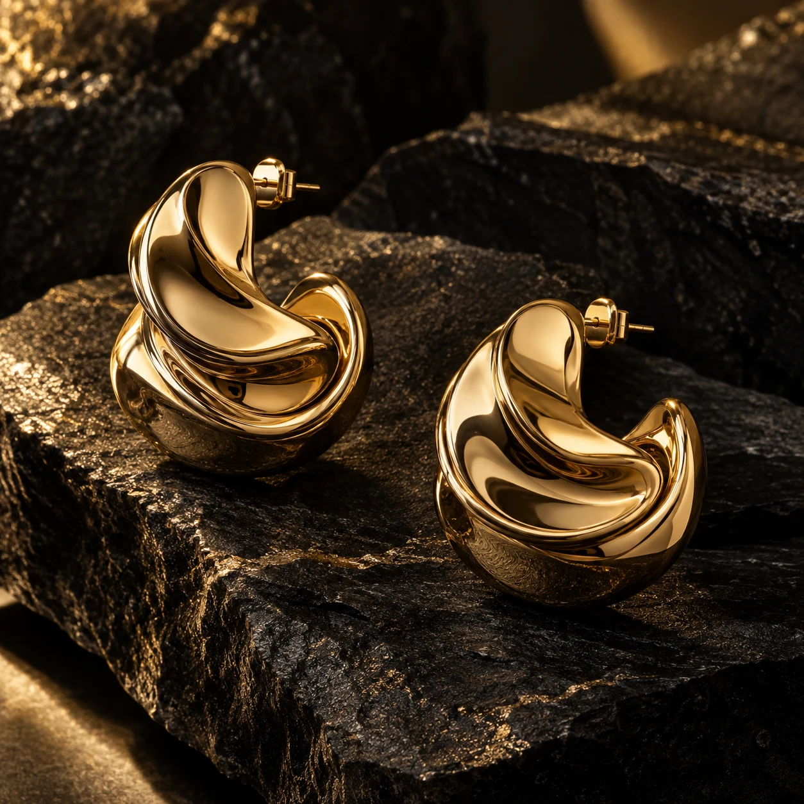
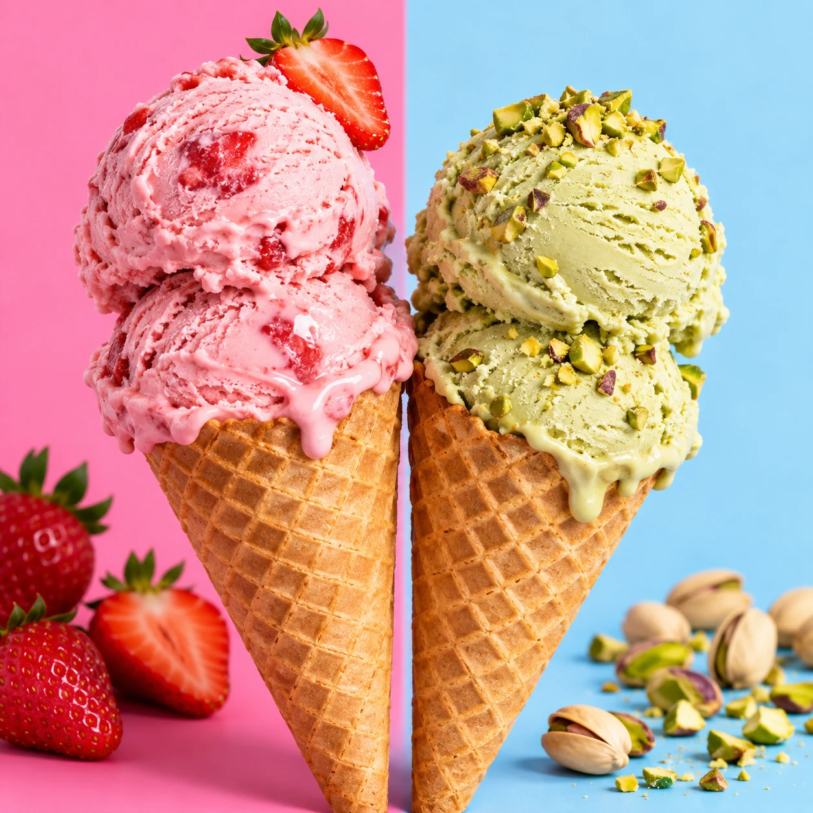
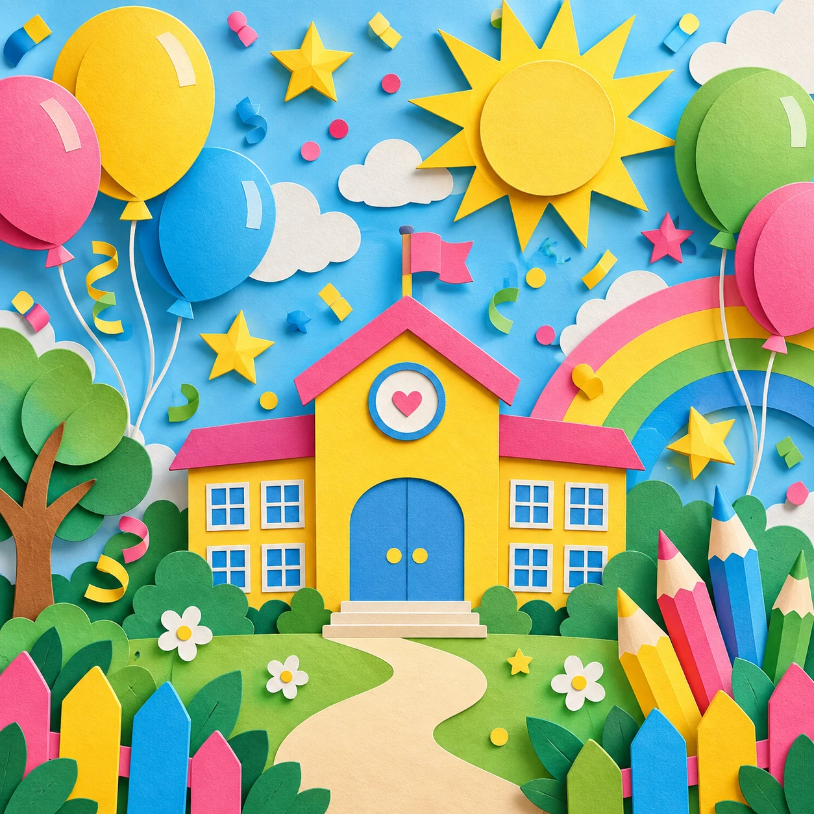

01 / 04
COMMUNITY OS
מערכת לניתוח פעילות קהילתית: תקציבים, השתתפות ושעות התנדבות. פילוחים אינטראקטיביים, גרפים ותובנות שמחושבים יחד.
לפרויקט ↙WEB DESIGN · DEVELOPMENT · AI
אתרים עם אופי, פיתוח מותאם אישית ויישום AI — לעסקים עצמאיים, מותגים וצוותים שרוצים לקחת את הדיגיטל שלהם קדימה.
SELECTED WORK
עיצוב, פיתוח וחוויית משתמש. מאתרי מותג עשירים ועד כלים אינטראקטיביים — כל פרויקט והאופי שלו.
מערכת לניתוח פעילות קהילתית: תקציבים, השתתפות ושעות התנדבות. פילוחים אינטראקטיביים, גרפים ותובנות שמחושבים יחד.
לפרויקט ↙עיצוב ופיתוח אתר ביוטי — שילוב בין רכות, נוכחות ותנועה שמרגישה יוקרתית.
לכניסה לאתר ↙מערכת חכמה ליצירה וניהול של חתימות מייל אחידות, עם תצוגה חיה וחוויית עריכה פשוטה.
נסו את עורך החתימות ↙ לצפייה בקוד ↗CODE & COLOR
קמפיין דיגיטלי
קריאייטיב לרשתות, דפי נחיתה, באנרים ושפה גרפית שממשיכה את המותג בכל נקודת מפגש.
פתיחת אתר הקריאייטיב ↙FIVE BRANDS. FIVE DIFFERENT WORLDS.
אתרי מותג, חוויות אינטראקטיביות וקמפיינים. מהרעיון הראשון ועד לפרט הקטן.
ביוטי · נקי, אישי ואלגנטי
לפתיחת דף הנחיתה והפוסטר ↗
תכשיטים · דרמטי ומדויק
לפתיחת דף הנחיתה והפוסטר ↗
גלידות · צבעוני ושובב
לפתיחת דף הנחיתה והפוסטר ↗
המבורגרים · נועז ומעורר תיאבון
לפתיחת דף הנחיתה והפוסטר ↗
יום כיף · שמח ומלא דמיון
לפתיחת דף הנחיתה והפוסטר ↗WEB · AI · AUTOMATION
אתרי תדמית, דפי נחיתה ו‑WordPress: מבנה ברור, עיצוב מותאם למותג וחוויית שימוש נעימה גם בנייד.
אפיון ויישום פתרונות AI לפי הצורך: עוזרים חכמים, תהליכי תוכן וכלים פנימיים, עם בקרה אנושית והתייחסות לפרטיות.
חיבור בין מערכות ואוטומציה של תהליכים — כדי להעביר מידע בצורה מסודרת ולפנות זמן לעבודה החשובה.
ממשקים ב‑React ו‑Next.js, פיתוח מותאם והשתלבות בצוות. לפרויקט ממוקד או לשיתוף פעולה מתמשך.
CONNECTED SYSTEMS. HUMAN THINKING.
אני מאפיינת ובונה אוטומציות וסוכני AI שמחברים בין המידע, הכלים והאנשים בעסק. מתחילים בתהליך שגוזל זמן — ובונים לו דרך טובה יותר.
פנייה נכנסת, מנותבת לפי סוג הבקשה וממשיכה למשימת מעקב מסודרת.
חיבור מסמכים ומאגרי ידע לסוכן באמצעות RAG, עם מקורות למענה והעברה לאדם כשצריך.
RAG · Pinecone · LlamaParseחיבור טפסים, מערכות ניהול וערוצי תקשורת. נתונים מובנים, ניתוב, הרשאות וטיפול בתקלות.
n8n · Webhooks · APIs · MCPתהליכים לסיכום שיחות, חילוץ פרטים ממסמכים, מחקר ואיסוף מידע — עם נקודות בקרה לאורך הדרך.
Claude · OpenAI · HTTP · Parsersבוגרת BotCamp של Focus AI: בניית סוכנים ב־n8n, מערכות RAG, חיבורי MCP ואפיון פתרונות AI עסקיים. את ההכשרה אני מחברת לניסיון שלי בפיתוח ואינטגרציות.
איזה תהליך נוכל לקצר אצלכם? ↗ABOUT ME
אני ליז חאג׳ג׳, מפתחת Full‑Stack, מומחית ומיישמת AI, עם לב של מעצבת. אני מחברת קוד, עיצוב ובינה מלאכותית כדי להפוך רעיונות לאתרים, כלים ותהליכים שמשרתים אנשים ועסקים.
אני בעלת תואר בהנדסת חשמל ואלקטרוניקה, עם כשלוש שנות ניסיון בפיתוח ב־Deloitte והסמכות Workato ו־MuleSoft. הניסיון שלי בפיתוח מערכות ואינטגרציות הוא הבסיס לעבודה שלי היום. היום אני משלבת React, WordPress וכלי AI בפיתוח ובפתרונות מותאמים — מתוך הבנה של הצורך העסקי, ולא רק של הטכנולוגיה.
אני עובדת עם בעלי עסקים ויזמים בפרויקטי פרילנס, ומשתלבת גם בצוותי פיתוח. מאתר תדמית ודף נחיתה ועד ממשק מותאם או תהליך אוטומטי — עם קשר ישיר, חשיבה משותפת וליווי לאורך הדרך.
בואו ניצור משהו יחד ←HAVE A PROJECT IN MIND?
אתר לעסק, רעיון למוצר, יישום AI או חיזוק לצוות? ספרו לי מה אתם צריכים.
בואו נדבר בוואטסאפ ↗